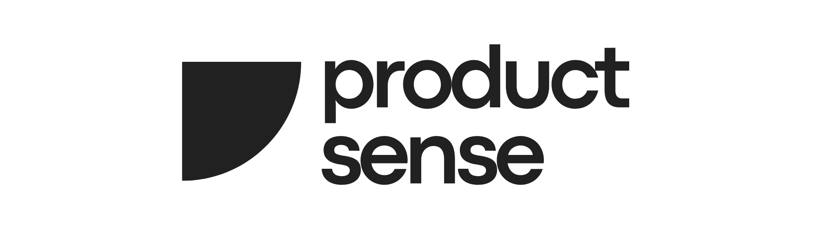
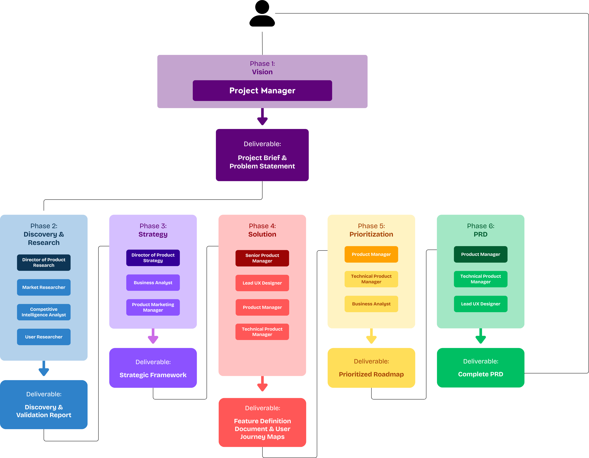
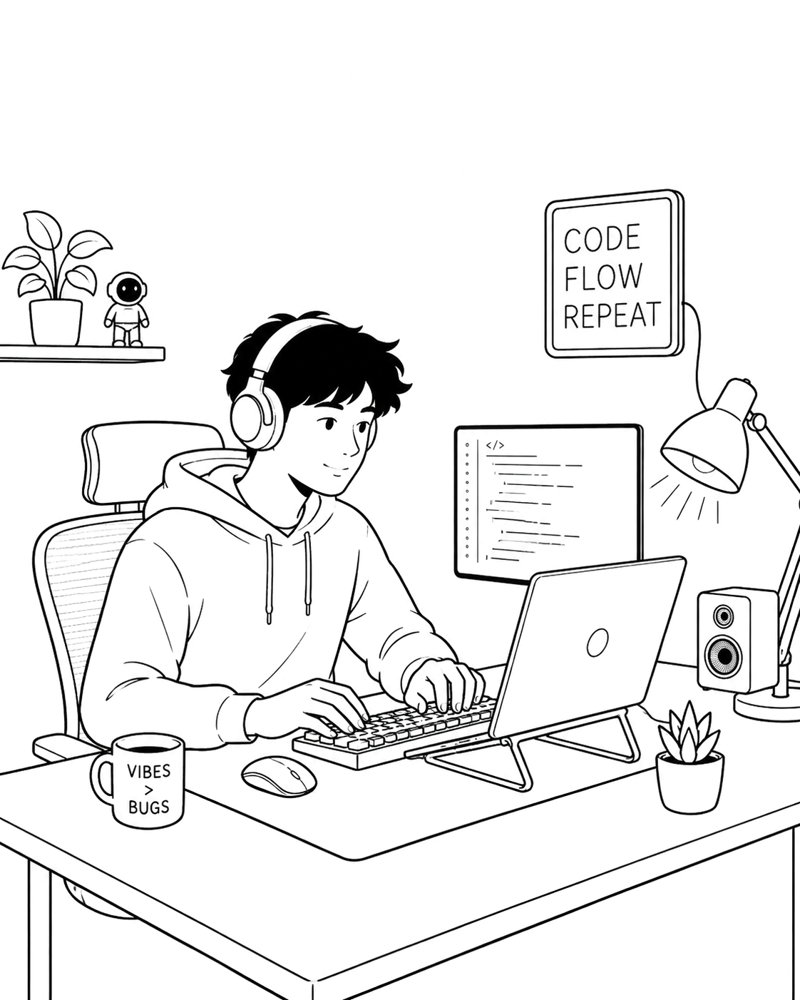
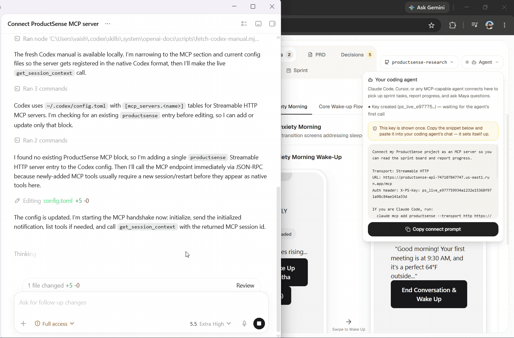
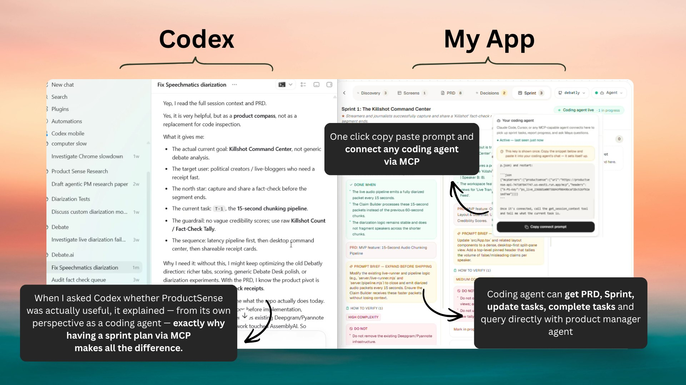

An AI product manager for users who can build, but can't product.

A new kind of user can build anything with a coding agent, but nobody taught them what to build. So they build the wrong thing, beautifully, and ship it to silence. Productsense is Maya: the product manager they never had.
01Where it started
This began as an independent research study with my professor and mentor, Dr. Ashim Bose. The brief was one line: explore how AI agents could do product management. It ran for the better part of eight months, and it ended somewhere neither of us drew on day one: a live product with a name, a user, and a coding agent plugged into it.
Two honest things about the start. I had read plenty about agents but had never built one. And I had no user group, no customer profile, nothing. I dove straight into the technology, and I underestimated how deep that rabbit hole went: multi-agent orchestration, agent pipelines, group-chat simulation, deep-agent harnesses, loop engineering. I'm glad I fell in. Everything I now know about building with agents came out of that hole.
That second confession matters, because it comes back at the end of this page.
02The first build: a PM department in a group chat
My first idea came from watching how real product teams work: expertise talking to expertise in a Slack channel. So I staffed one. I broke the typical PM workforce into individual agents, a user researcher, a competitive analyst, a market researcher, and so on, and put them in a simulated group chat to collaborate toward one goal.
Then I gave it structure. A Vision kickoff, followed by five phases: Discovery & Research, Strategy, Solution, Prioritization, and PRD. Each phase had a supervisor agent accountable for its output, with three or four specialists under it. When a phase finished its report, the report passed to the next phase's supervisor, like a real handoff between teams. Run all five and you got five full reports, ending in a complete PRD.

The actual org chart I drew. Vision hands a project brief to Discovery & Research, whose Director runs a Market Researcher, a Competitive Intelligence Analyst, and a User Researcher, and so on down the line: Strategic Framework, Feature Definitions, Prioritized Roadmap, Complete PRD. Five phases, five reports.
03Three frameworks to get one good conversation
The architecture was fixed. The problem was making agents actually talk like a team, and it turned out the framework choice mattered more than any prompt I wrote.

January, the earliest surviving test, at 2× speed. Before wiring all five phases, I isolated one and ran it over and over, deterministic pathways against non-deterministic ones. This clip is why I stopped believing rigid pathways could fake a real conversation, and why the framework hunt below happened at all.
The thing I was chasing was a natural group chat, and AutoGen was built around exactly that. Conversations stopped dying, turn-taking felt organic, and long runs completed. So I standardized on it, wired all five phases through it, and tuned the knowledge base and process definitions across repeated discovery runs.

February: all five phases running on AutoGen, at 2× speed. It worked. It was also enormous, and that becomes the story.
Keep the AutoGen decision in mind, though. Being right for the group chat didn't make the group chat right.
04The user I hadn't looked for
Months in, I still couldn't answer the basic question: who is this for? The irony was not lost on me. I was building a tool whose whole job is making people do discovery before they build, and I had skipped discovery. I built first and asked who wanted it later.
When I finally asked, the answer wasn't where I expected. Enterprises don't need an AI PM; they have a PM org, and at that scale the objectives and stakes are completely different. But I noticed who did need one: me. I was vibe coding my own side projects, drifting, building without a focused plan. Productsense itself had no focused build. I was the customer, sitting inside the problem the product was supposed to solve.
And I wasn't alone. Vibe coding has done to shipping software what YouTube did to video: it democratized it, and a creator economy is forming around it. Solo users and two-person teams shipping apps for income, tools for vibe coders, platforms for vibe coders, communities where they help each other. I was already part of that community without noticing. So I did the discovery properly, late: search-trend digging, deep dives through Threads and community forums, asking builders directly. The appetite was real.

Solo and two-to-three person users who build with coding agents. It's aimed at non-technical first-timers; experienced shippers are explicitly out of scope for v1.
"I can build anything with Claude Code or Cursor. I just don't know what to build, for whom, or what to cut."
Enterprises and big tech. They already have the workforce, and at their scale the impact, expectations, and objectives are a different product entirely.
05What a vibe coder doesn't need
Knowing the user let me finally cut. A vibe coder doesn't care about TAM and SAM. They aren't pitching investors, so they don't need a billion-dollar market story. They can ship a product for less than a hundred dollars, and a hundred paying customers is a win. Most of my five-phase research depth was answering questions my user never asks.
So five phases became three:
Discovery
What users are saying, what competitors exist, what solutions already ship, and where the frictions live.
Planning
The solutions that answer those frictions, and the feature cut that makes a minimum viable launch.
Sprint
The build broken into sprint plans, sized and worded for vibe coding.

April: the strip-down build, at 2× speed. The same engine, cut from five phases to three, aimed at one user instead of everyone.
Scope-cutting is the exact discipline the product preaches, applied to itself. That felt right.
06Then I deleted my favorite part
As the product got real, the group chat stopped earning its keep. AutoGen made agents talk well, and that was the problem: they talked a lot. Tokens burned on back-and-forth that no user would ever see, agents agreeing with each other, restating, handing off. The simulation was the most impressive thing I'd built, and it was mostly overhead.
The question that killed it: if all the user needs is synthesized judgment, why simulate a meeting? Why not one product manager who is genuinely good, holding the tools herself? That question sent me into deep-agent harnesses and loop engineering, and the answer became the shipped architecture:
Maya. One agent, and only one. She runs on a LangGraph deepagents harness with Gemini 3.1 Pro and dynamic thinking, and she holds every tool herself: live web research over Firecrawl, file ingestion for whatever the user attaches, the GitHub digest, and about thirty domain tools that write into the product record. The supervisors are gone. The researcher personas are gone. The group chat is gone. Maya thinks, calls a tool, and moves, and she is the only thing running and the only voice the user ever hears.
There's a full-circle joke in here: the harness is LangGraph, the first framework I abandoned. It was wrong for simulating a committee and it's right for running one deep agent. Frameworks aren't good or bad. They're good or bad for the interaction you're building.
Her research has one house rule: lead with real voices. Reddit threads and their comments, the one-to-three-star app reviews, community forums. Marketing pages last. The unmet need lives in complaints, not in vendor copy.
The shipped architecture, end to endThe user's browser
Chat plus the dashboard. Maya's replies stream token by token, with tool chips and artifact hints updating the tabs live.
Coding agent
Pulls sprint tasks, guardrails, and PRD context, and reports progress back. It never touches Maya's chat loop.
MayaSession, the turn runner
Every message becomes a detached task that survives the browser dropping the connection. After each turn it prunes raw search results from history, so Maya keeps the synthesis and sheds the bulk.
GitHub integration
Ingests the linked repo's README, package files, and file tree into a digest Maya loads every turn. Deliberately narrow: no webhooks, no per-file reads.
Maya · Gemini 3.1 Pro
One brain. Thinks first, then acts.
Ask the user
Pauses the turn and puts a real decision to the user. The turn resumes when they answer, even days later.
Domain tools · ~30
Everything that populates the dashboard. All of it writes to Supabase.
Research tools · 3
Firecrawl underneath, capped at 5 searches a turn. The standing rule: think first, search only when a claim needs real-world backing.
Summarization
Compacts history before the context window fills.
Checkpointer
State lands in Supabase each turn. It's how an interrupted turn resumes.
Skills + memory
Loaded read-only. Disk writes are denied by permission.
Supabase
Vertex AI
Firecrawl
LangSmith
GitHub
The whole thing rides on one Cloud Run service: scale to zero when idle, CPU kept allocated mid-turn so a dropped connection can never freeze a running turn. And the repo digest is a deliberate scope call: Maya gets the shape of the codebase so her advice is grounded in real files, while file-level detail stays where it belongs, with the coding agent in the IDE.
07What the user sees
You talk to Maya in plain English: "I want to build X," or "I shipped X and nobody's using it." The workspace around the chat has five tabs: Discovery, Screens, PRD, Decisions, and Sprint. The hero image at the top of this page is a real session, and it's a personal favorite: that's Maya planning a streamer toolkit for Debatly, my other project, then asking whether she should hand it to the coding agent.
Three decisions under the hood do most of the work:
A coherence graph, not a document dump. Every artifact Maya produces, the problem, the users, each friction, the positioning, the PRD, every sprint task, is a node wired to the nodes it came from. Change something upstream and everything downstream gets flagged for review. The database is the source of truth, not the chat scrollback, which is why the record survives new sessions and long builds.
Living artifacts. Nothing is write-once. Maya edits cards, supersedes stale ones, resolves open questions, and keeps the record coherent while the product changes under it. Sprint tasks carry the fields a coding agent actually needs: an acceptance line ("done when"), a verification step, an explicit do not list, and the PRD context they trace back to.
One move per turn. Maya makes a single move, then hands the conversation back. She acknowledges you before she starts the work. She refuses "all of it" as a scope answer. No thirteen-hundred-line spec for a date picker.
Even the wireframes follow the discipline: the Screens tab renders greyscale layouts from a deterministic block language, not from model-generated HTML, so every screen comes out consistent and reviewable.
08Closing the loop: the sprint board is an MCP endpoint
Here's where most tools would stop: export the plan as a markdown file, let the user paste it into their coding agent, wish them luck. I refused to ship that. A plan you paste is a plan that goes stale the moment the build starts.
So the sprint board itself is a hosted MCP endpoint. The user clicks once, gets a connect prompt with a per-project key, and pastes it into whatever coding agent they use: Claude Code, Codex, Cursor, anything MCP-capable. Zero install. The key is shown once, stored only as a hash, rotates on demand, and the app shows an honest last-seen dot for the connected agent.

The first handshake. A coding agent connects to the board and pulls its context. This clip is the moment the whole research project became a product.
Once connected, the agent can pull the session context, the PRD, its tasks with their guardrails, update and complete work, and ask Maya questions directly from inside the coding chat. It can propose a task, which lands on the board flagged for Maya's review. When the sprint's done it files a build report and requests the next one. One rule is hard-coded: agents never create sprints. Maya stays the planner.
Why this split matters. Product thinking and code execution are different jobs with different context. Keeping research, decisions, and planning in Maya means the coding agent's expensive context stays lean and focused on the build. Start a fresh coding chat and nothing is lost, because the plan never lived in the chat. Two people, or two agents, can build from the same board.

The testimonial I didn't write. I asked Codex, mid-build, whether Productsense was actually useful. Its answer: it's "a product compass, not a replacement for code inspection." It listed what it got: the actual goal, the target user, the north star, the current task, and the guardrails. When the coding agent can explain your product's value better than your landing page, the loop is real.
And GitHub closes the circle. Connect the repo, and Productsense builds a digest: the stack, the feature surface, a plain-English summary of what the app does today. When the agent requests the next sprint, the repo re-syncs in the background, so Maya plans sprint N+1 against what was actually built, not what was planned. It's a sprint retrospective, automated.
The build loop, end to endConnect one paste, zero install
Copy the connect prompt into any MCP-capable coding agent. The per-project key is shown once and stored only as a hash.
Pull
The agent fetches the session context, the PRD, and its tasks, each with the acceptance line, the verification step, and the do-not list.
Build
The agent codes. It can ask Maya questions mid-build, and propose tasks that land on the board flagged for her review.
Push
Code lands on GitHub. The repo digest re-syncs: stack, feature surface, and a plain-English summary of what exists now.
Report request_next_sprint
The agent files a build report and asks for the next sprint.
Re-plan
Maya plans sprint N+1 with the user, grounded in what actually got built. Then the loop starts again at step 2. Agents never create sprints. Maya stays the planner.
09Benchmarks and battle scars
The model choice got benchmarked, not vibed. I A/B tested Maya on Gemini 3.1 Pro against 3.5 Flash: same scenario, identical setup. The bigger model completed cleanly 3 out of 3 runs against Flash's 2 out of 3, produced more complete output, and, the part I didn't expect, came out about 35% cheaper per turn. A better orchestrator wastes fewer steps, and wasted steps are where the tokens go. The benchmark script ships in the repo (bench_compare.py), so anyone can re-run it.
Live testing left scars, and each one became a design rule. I've been handing the app to students in my college community and fixing what their sessions break:
The MCP bridge has its own end-to-end suite: 15 of 15 tests across auth, the protocol round trip, the loop-closing effects, and key rotation. Every agent turn is traced in LangSmith, so when something goes wrong there's a recording, not a guess.
10Tech stack
deepagents on LangGraph
gemini-3.1-pro · Maya, dynamic thinking
Firecrawl · web research
~30 domain tools + 3 research tools
Model names and tool counts are the constants pinned in the repo, not approximations.
11Where it is, where it's going
Productsense runs end to end on Cloud Run today, single-tenant. The current work is testing: I hand it to students and builders in my community, watch them plan and build real projects with it, and fix what their sessions surface. Several of the battle scars above came straight from those runs.
The roadmap points one direction: Slack and workspace integrations, team support, everything in one hub, until this is a product management suite for coding agents. Maya owns what to build and why. The coding agents own how. Productsense stays the handshake between them.
12What it taught me
I skipped discovery while building a discovery tool, and paid for it in months. The product I ended up shipping exists so the next builder doesn't do what I did. I can't think of a better proof of the problem than the way I built the solution.
Impressive architecture is a cost, not a feature. The multi-agent group chat was the best demo I've ever built, and it was mostly agents performing work at each other. One good agent holding the tools beat eight agents talking, on quality and on cost. Deleting it was the single best product decision in the project.
The valuable part is the seam. Anyone can generate a PRD. The thing that didn't exist was the handshake: product judgment living in one place, build execution in another, connected by a protocol instead of a pasted file. That separation of context is what makes both sides better, and it's the part I'd defend in any interview.